Normalize
Each sample is cropped, scaled without changing its proportions, and centered on the same canvas.
2026 · Experimental type system
μ = Σx / n
σ² = Σ(x - μ)² / n
Collective handwriting · nine levels of consensus
Mean Hand Symbols turns thousands of handwritten samples into one coherent visual language. Instead of choosing a single writer's style, the system reveals the forms people share.
The project combines HASYv2, a supplemental handwritten-symbol dataset, and UJI Pen Characters v2. Samples are aligned, averaged into probability maps, and translated into a family of weights, producing one consistent set for digital and vector use.
Inspired by Anna Zhang's Mean Hand.
Handwritten symbols vary in angle, scale, proportion, and stroke order. Averaging them can create a blur rather than a useful glyph. The challenge was to preserve the character of collective handwriting while making every symbol consistent enough to compare, typeset, and reuse.
Align samples without distorting proportions. Preserve meaningful stroke boundaries. Keep fragile marks visible in lighter weights. Fill gaps across the character set. Maintain one clear order across every output.
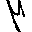
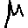
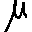
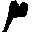
Regular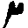
Light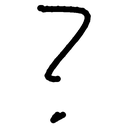
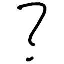
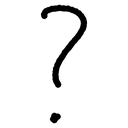
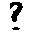
Bold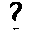
Medium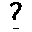
Regular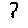
Light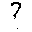
Extra Light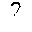
ThinEach sample is cropped, scaled without changing its proportions, and centered on the same canvas.
Aligned samples form a probability map. Darker areas show where writers placed ink most consistently.
Black retains more variation, while Thin keeps only the strongest agreement.
The final forms become editable paths with a named layer for every weight.
HASYv2 establishes the core appearance for mathematical symbols, letters, numbers, and punctuation.
The weights show how much agreement is needed for a mark to remain, rather than imitating conventional stroke expansion.
Small punctuation and umlaut dots use adjusted thresholds so lighter forms remain recognizable.
UJI Pen Characters v2 adds punctuation and Latin forms missing from the main source. Its pen strokes pass through the same alignment and averaging system so every addition belongs to the same family.
Mathematical symbols, letters, numbers, and established punctuation.
Ten missing classes, including ! , ( ).
? . ; : ' " @ ¿ ¡ € plus t Ü ü.
Umlaut strokes from UJI are placed above HASYv2 letter forms to create Ä ä Ö ö while keeping the family visually consistent.
HASY letter form + UJI umlaut strokes = derived glyph
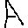
A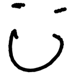
Ü source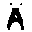
Ä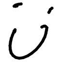
ü source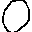
O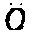
Ö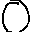
oThe same probability map drives every weight. Black includes more individual variation; lighter weights represent the strokes shared most consistently. The numbers follow the standard CSS scale, from 900 Black to 100 Thin.
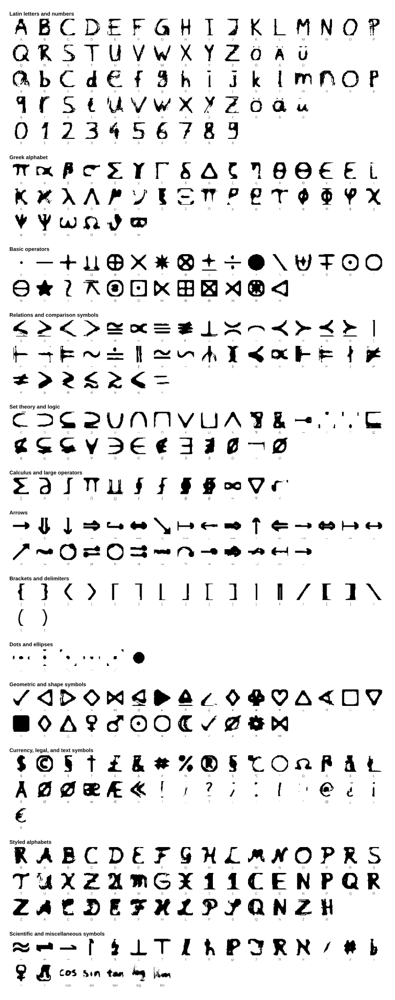
Switch between all nine weights, change the scale, and type directly with the symbol family.
The same source data now powers webfonts, complete character sheets, layered glyphs, bitmap specimens, and an interactive gallery. Clear source rules and automated checks keep the system consistent as it grows.
Stable character mappings support digital use. Matching sheet order makes weights easy to compare. Layered vectors remain editable. Reports track sources, sample coverage, and generated assets.
The project reframed consistency as a system of rules rather than a single visual style. Designing the alignment, source logic, and checks was as important as shaping the final forms. The result is both a type system and a transparent way to turn uncertain data into a reliable interface asset.
Compare probability means with all nine weights, filter by source, and inspect the character system individually or by category.
If you like what you see and want to work together, get in touch!
prathikp.prasad@gmail.com